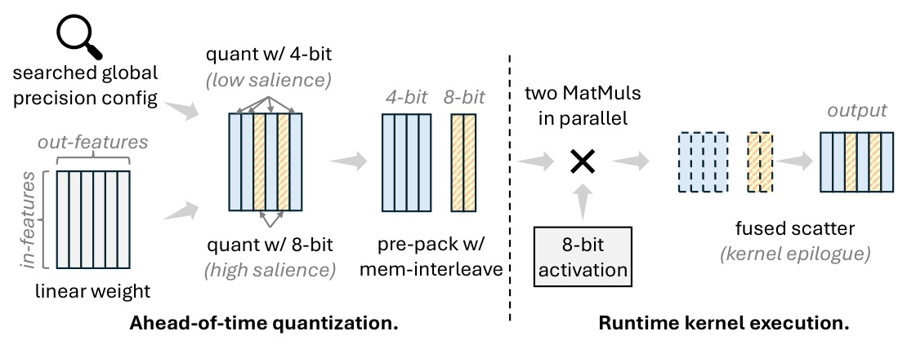
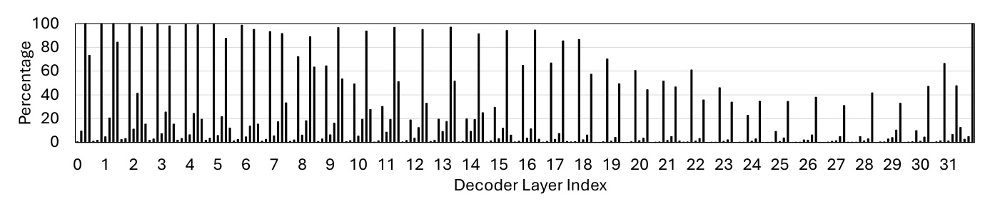

用全模型 loss 找出值得保留位元的 output channels，再把這個演算法選擇變成能跑滿 GPU 的 kernel。
Source: paper cover p.1 · arXiv:2412.14590 · official MLSys 2026 paper index. Friday rotation fallback after arXiv discovery HTTP 429.
MixLLM 的關鍵不是「混幾種 bit」，而是把有限的 8-bit 預算放到跨層最會影響 final loss 的 output channels。
INPUT-FEATURE SPLIT
OUTPUT-FEATURE SPLIT

ACCURACY
SYSTEM
OFFLINE SEARCH
ALLOCATION

WITHIN A GROUP
END-TO-END
MEMORY
COMPUTE
| Method | WikiText2 PPL | C4 PPL |
|---|---|---|
| QServe W4A8 | 3.49 | 7.07 |
| MixLLM W4A8 | 3.30 | 7.24 |
| MixLLM W4.4A8 | 3.02 | 6.83 |
| FP16 | 2.81 | 6.68 |
| Method | BBH | MMLU-Pro | ARCc | HellaSwag |
|---|---|---|---|---|
| QuaRot W4A8 | 46.95 | 33.60 | 51.39 | 78.55 |
| QServe W4A8 | 45.78 | 32.84 | 50.54 | 78.10 |
| MixLLM W4.4A8 | 48.17 | 34.53 | 52.70 | 79.00 |
| FP16 | 48.62 | 35.52 | 52.24 | 79.43 |
| Output features | W4A8 | W8A8 | W4.8A8 |
|---|---|---|---|
| 4096 | 1.96x | 2.76x | 1.88x |
| 14336 | 2.45x | 2.15x | 2.34x |
| Output features | vs naive W4A16 | vs shuffled W4A16 |
|---|---|---|
| 4096 | 1.81x | 1.39x |
| 14336 | 1.91x | 1.34x |
全域策略得到的不是平均分配，而是把 v_proj / down_proj 視為更值得花 bit 的地方。
Llama 3.1 8B；全模型 high-precision budget = 10% output features。數字是不同 linear-layer class 的平均 8-bit ratio。
| Model | Global search |
|---|---|
| Llama 3.1 8B | 7 min |
| Llama 3.1 70B | 55 min |
| Mistral 7B | 7 min |
| Qwen2.5 1.5B | 2 min |
| Qwen2.5 7B | 7 min |
CALIBRATION
KV QUANT
若 accuracy 最敏感的部分有結構化的軸，就不要把它做成 sparse exception；把它變成可獨立排程的 dense subproblem。
MixLLM identifies the important output features in the global view rather than within each single layer.
MixLLM 不在每一層各自判斷，而是用全模型視角找出重要輸出特徵。Abstract p.1
the mixed-precision between output features makes the system design easier than between input features because the calculation of different output features are disjoint sub-problems.
輸出特徵的混合精度把計算拆成互不重疊的子問題，因此比 input-feature 的切法更容易落到系統實作。§1 p.2
Global bit allocation + kernel co-design for the accuracy / memory / throughput intersection.